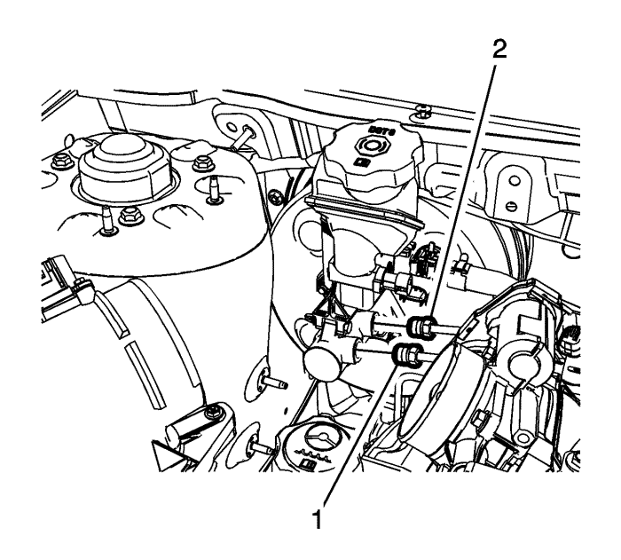
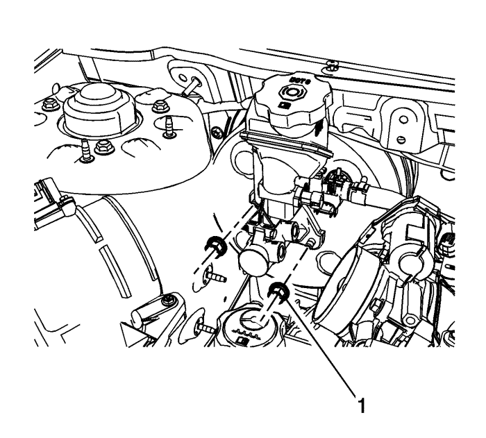

Sustitución del cilindro maestro — RHD (volante a la derecha)
Procedimiento de desmontaje
Advertencia: Consulte Advertencia de líquido de frenos irritante en la sección Prólogo.
Precaución: Consulte Advertencia sobre los efectos del líquido de frenos sobre la pintura y los componentes eléctricos en la sección Prólogo.
- Utilizando una herramienta adecuada, extraiga el líquido de frenos del depósito del cilindro maestro del freno.
- Deseche el líquido de frenos introduciéndolo en un depósito homologado.
- Desmonte la cubierta del colector de admisión; consulte Sustitución de la cubierta del colector de admisión (2.4 l), Sustitución de la cubierta del colector de admisión (3.0 l) o la protección del motor Sustitución del protector del motor (2.0 l, 2.2 l diésel).
- Si el vehículo está equipado con el motor 3.0 l , desmonte el conducto de salida del purificador de aire. Consultar Sustitución del conducto de salida del filtro de aire .
- Sin desacoplar los tubos flexibles, desmonte y sitúe a un lado el depósito de líquido de dirección asistida, si es necesario. Consultar Sustitución del depósito del líquido de la dirección asistida .
- Desenchufe el conector eléctrico del interruptor del indicador de nivel de líquido de frenos.

- Desconecte el racor (1) del tubo de freno secundario del cilindro maestro.
- Tape el herraje de los tubos de freno y la boca de salida del cilindro maestro para evitar la contaminación y la pérdida de líquido de frenos.
- Desconecte el racor (2) del tubo de freno primario del cilindro maestro.
- Tape el herraje de los tubos de freno y la boca de salida del cilindro maestro para evitar la contaminación y la pérdida de líquido de frenos.

- Desmonte las tuercas del cilindro maestro (1).
- Desmonte el cilindro maestro.
Procedimiento de montaje
- En el supuesto de instalar un cilindro maestro nuevo, retire y purgue el cilindro maestro. Consultar Purga del aire del cilindro maestro .
- Acople el cilindro maestro al servofreno de vacío.
Precaución: Consulte Precaución con las fijaciones en la sección Prólogo.
- Monte las tuercas del cilindro maestro (1), y apriételas a 13 N·m (115 lb pulg.).
- Monte el racor (1) del tubo secundario del cilindro maestro y apriételo a un par de 16 N·m (12 lb. pie).
- Monte el racor (2) del tubo primario del cilindro maestro y apriételo a un par de 16 N·m (12 lb. pie).
- Enchufe el conector eléctrico del interruptor del indicador del nivel del líquido de frenos.
- Purgue el sistema de sistema de frenos hidráulicos. Consultar Purga de aire del sistema de frenos hidráulicos : Manual → Presión .
- Si se ha desmontado previamente, monte el depósito de líquido de dirección asistida. Consultar Sustitución del depósito del líquido de la dirección asistida .
- Si el vehículo está equipado con el motor 3.0 l , monte el conducto de salida del purificador de aire. Consultar Sustitución del conducto de salida del filtro de aire .
- Monte la cubierta del colector de admisión; consulte Sustitución de la cubierta del colector de admisión (2.4 l), Sustitución de la cubierta del colector de admisión (3.0 l) o la protección del motor Sustitución del protector del motor (2.0 l, 2.2 l diésel).
| © Copyright Chevrolet Europe. All rights reserved |